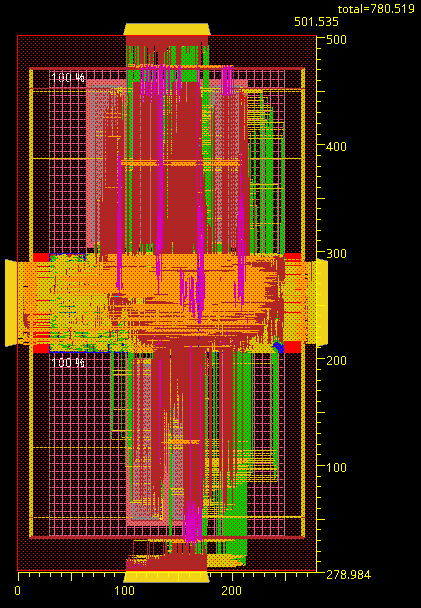
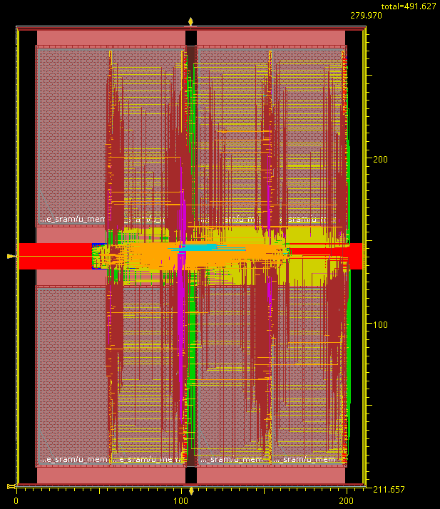

RTL & verification
Verilog, VCS, Verdi, ModelSim, testbench and regression development; SystemVerilog and SVA training.
DIGITAL IC · PROCESSOR / SOC · AI ACCELERATION
I am Xi-Zhu Wang, an NTUST M.S. graduate in electrical engineering. My work spans RTL design and verification, processor–accelerator systems, mixed-precision HBM-PIM, EDA algorithms and ASIC implementation.
Graduated Aug. 2026
HBM-PIM places compute near memory to reduce data movement for memory-intensive AI workloads.
PROFILE
My strongest work connects microarchitecture, data movement and implementation constraints. I move between specification, RTL behavior, verification evidence and post-synthesis or post-layout results.
Verilog, VCS, Verdi, ModelSim, testbench and regression development; SystemVerilog and SVA training.
Five-stage pipeline, hazards and forwarding, CPU–accelerator integration, control and data movement.
CNN and LLM accelerators, mixed precision, HBM/HBM-PIM architecture and Ramulator2 evaluation.
Synthesis, physical implementation, DRC/LVS, timing/area/power analysis, legalization and clock-tree algorithms.
GRADUATE RESEARCH
The research explores how concurrent LLM requests share HBM-PIM resources under bandwidth, memory-capacity and latency constraints. It combines adaptive precision, scheduling and data mapping to improve effective throughput while preserving inference quality.
Second author · Adaptive Multi-User Scheduling for Large Language Model Inference on HBM-Based Processing-in-Memory Accelerators
Publication and DOI ↗Ramulator2-based evaluation for Llama 3.1 8B and Mixtral 8×7B workloads.
Precision selection, request scheduling, data mapping and contention analysis.
RTL verification, synthesis and physical implementation using a TSMC 16 nm ADFP academic flow.
SELECTED WORK
Representative work is organized by engineering contribution and reproducible evidence.
A mixed-radix 3 × 512 streaming architecture with fixed-point twiddle tables, ping-pong memory, natural-order output scheduling and a self-checking regression.
Integrated a CNN accelerator with a 32-bit RISC CPU for end-to-end inference, including RTL, verification scripts, control/data movement and post-layout implementation.
Implemented a 32-bit processor with forwarding, hazard detection, load-use stalls and branch control; verified functionality with ModelSim and exercised an OpenROAD implementation flow.
Implemented a Timing Correlator and K-Best-based 16-QAM MIMO detector in Verilog, then completed logic synthesis using the 16 nm ADFP academic flow.
17,655 µm²post-synthesis cell area
Open repository ↗Implemented a C++ legalization engine for approximately 50k cells with constraint handling, stable data structures and reproducible evaluation.
18%lower average displacement than the project baseline
Open repository ↗Senior project on fault detection, built-in checking and address remapping for advanced flash memory; completed a 90 nm post-layout academic flow.
PHYSICAL IMPLEMENTATION
Figures below are sourced directly from public project repositories.

A standalone decoder and vector-level protection wrapper with syndrome calculation, error location/correction and verification-oriented fault injection.
Source and reports ↗
Graph-optimization RTL with SRAM-first storage, start/result control and verification vectors for energy-ratio evaluation.
Source and reports ↗PUBLIC PROJECT INDEX
Core hardware work is listed first, followed by earlier software and coursework.
Seven repositories
Four repositories
One repository
Five repositories
ENGINEERING TOOLBOX
Verilog · VCS · Verdi · ModelSim · SystemVerilog/SVA training
Design Compiler · ICC2 · Innovus · Calibre DRC/LVS · OpenROAD
C/C++ · Python · Bash · Linux · Git · Ramulator2
Xilinx ZCU102 · PYNQ-Z2 · Vivado · Vitis HLS
EDUCATION & EXPERIENCE
Research in HBM-PIM architecture, mixed-precision computing and multi-user LLM inference scheduling.
Double major in Finance; senior project on fault-tolerant flash-memory design.
Guided CPU datapath/control, RTL simulation, waveform debugging and OpenROAD labs; developed Python/Bash grading automation.
CONTACT
For technical discussion, collaboration or professional opportunities.